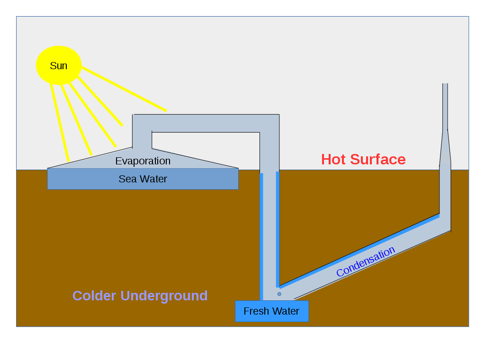

Water is one the most important resources to regular life. However, due to Climate change, water supplies are dwindling. As populaion and demand for fresh water grows, fresh water will decrease. The ocean is majority of Earth's water supply. However, it is also tainted with different minerals, like salt, that makes it insificient for usage. If society came up with a suffiecient way of taking out the salt in ocean water, we'd have a supply that is almost infinite. There are few methods to this problem that exists. There is Water Disitlltion, Reverse Osmosis, and Electrodialysis.
This site is to educate those who wish to learn how this is possible. We will be providing simulations and video guidlines to help you understand the methods for water desalination.
Distillation takes advantage of the changes in matter. The standard machine consists of 2 chambers. 1 chamber is for heating and the other chamber is for cooling. The seawater is first put into the heating chamber. From there, the water evaporates into its gas state. When the water evaporates, it leaves behind the unwanted contaminants like chlorine and sodium. The evaporated water travels through a pipe into the cooling chamber, where it is condensed back into its liquid state. Producing, fresh clean water. The advantage of Distillation is that it is the simplest of desalination methods, as it does not require as many resources or technical skills. For example, the image below demonstrates a distilling method that uses the natural heat from the sun rays and the natural coolness of the ground. However, this method would not satisfy the need for a large community.
Source(s):
https://www.livescience.com/41510-what-is-distilled-water.htmlReverse Osmosis is a more large scale method in comparison to distilling. This method uses a high pressure pump to push water across a semi-permeable membrane. The salt particles are not able to push through this membrane. Thus, producing clean water. Image provide below for reference:
Reverse osmosis is not perfect however. It can still suffer from other particles still remaining in water. Meaning the water is not fresh or available for drinkability. Another problem is that the method traditionally used in factories, which shows that the cost and energy consumed by this method can be high.
Source(s):
https://biotechwater.com/advantages-disadvantages-reverse-osmosis/Electrodialysis consists of at least 3 chambers and like Reverse Osmosis, it uses semi-permeable membranes. However, instead of a pump, electricity is used to attract ions from the water. An ion is an atom that has lost or gained an electron. There are 2 types of ions. Cations are positive ions that have lost electrons. Anions are negative ions that gain electrons.
An example of a cation in seawater is Sodium. While, chloride is an example of an anion. In electrodialysis, the electricity is being used on electrodes.There are 2 types of electrodes, anode and cathodes. Anodes are positively charged, so the anions in electrolysis attract them. Meanwhile, cathodes are negatively charged, so cations are attracted to the cathodes. In electrodialysis, when this happens the anions push themselves through the membranes and move close to the electrodes. Leaving behind only water particles.
Source(s):
https://www.amtaorg.com/electrodialysis-reversal-desalinationThe design provided below is a prototype we designed using electrodialysis. This is a prototype for what an electrodialysis design could look like. In the future, if this site was to gain traction, we’d like to be able construct our prototype and fully test the method.